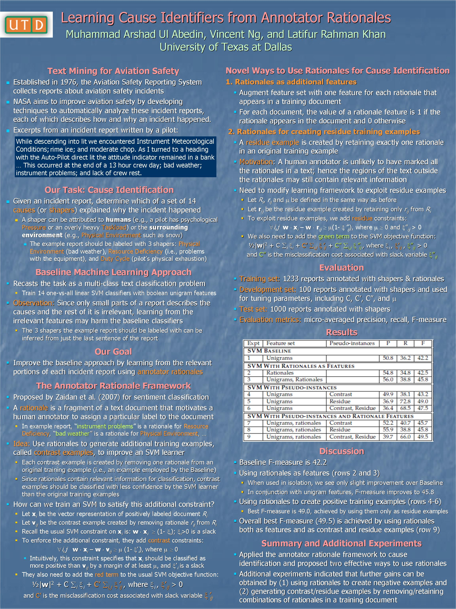

Learning Cause Identifiers from Annotator Rationales
Muhammad Arshad Ul Abedin, Vincent Ng, and Latifur Rahman Khan.
Proceedings of the 22nd International Joint Conference on Artificial Intelligence, pp. 1758-1763, 2011.
Click here for the
PostScript or PDF
version.
Abstract
In the aviation safety research domain,
cause identification refers to the task
of identifying the possible causes responsible for the incident
described in an aviation safety incident report.
This task presents a number of challenges, including the scarcity of labeled data and the difficulties in finding the relevant portions of the text. We investigate the use of annotator rationales
to overcome
these challenges, proposing
several
new ways of utilizing
rationales
and showing that through judicious use of the rationales,
it is possible to achieve significant improvement over a
unigram SVM baseline.
Dataset
The human annotation used in this paper is available from
this page.
BibTeX entry
@InProceedings{Abedin+Ng+Khan:11a,
author = {Muhammad Arshad Ul Abedin and Vincent Ng and Latifur Rahman Khan},
title = {Learning Cause Identifiers from Annotator Rationales},
booktitle = {Proceedings of the 22nd International Joint Conference on Artificial Intelligence},
pages = {1758--1763},
year = 2011
}
